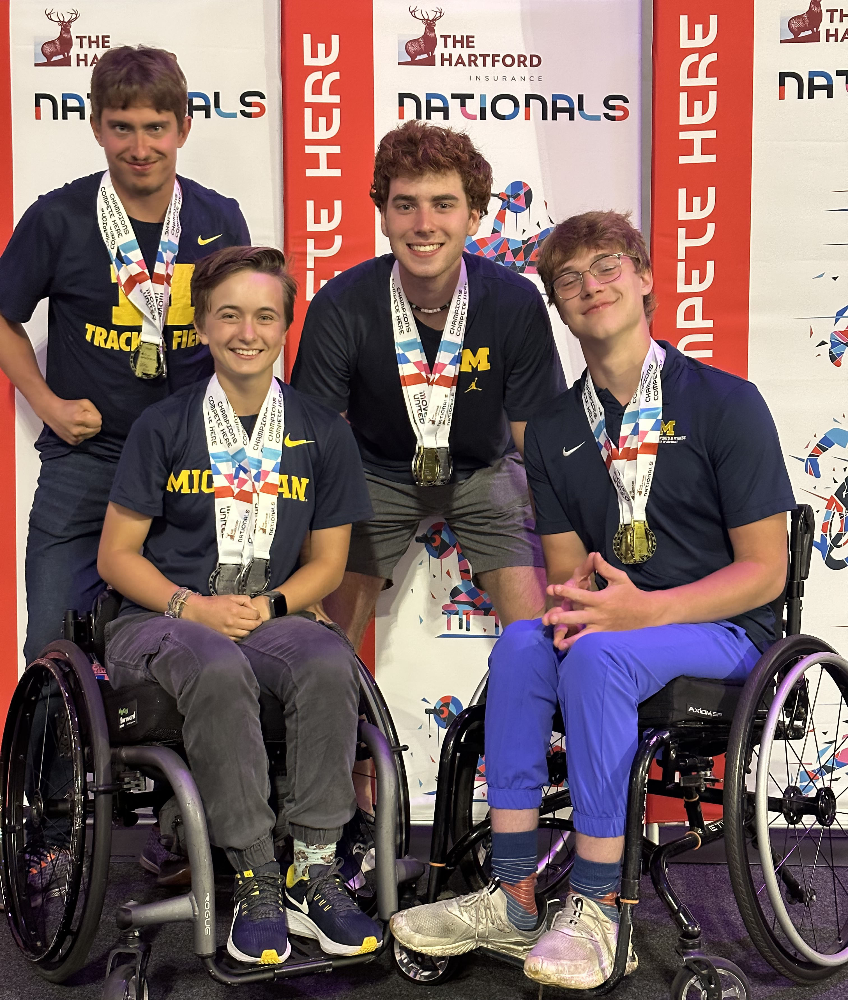

My Story
Hello, I'm Mathurin Gagnon, and I'd like to share my journey with you.
I was raised in Marquette, Michigan, where my father, a University of Michigan alumnus, played a significant role in shaping my values. He not only instilled the principles of hard work and an active lifestyle but also introduced me to sports. From cross-country skiing to mountain biking adventures, he ignited my passion for physical activity, and his influence is the cornerstone of why sports have always been an integral part of my life. Despite his passing when I was seven, his memory continues to inspire and guide me in life.
 I first started running in middle school when I was introduced to cross country, and track and field. Ever since
then, running became a part of my identity. I loved it and did it all the way through high school, eventually
culminating in me winning the 800m UP State finals in my senior year. After this, I felt my future was set. I had
gotten into the University of Michigan like my father and stepbrother, and I was determined to graduate high
school and then college.
I first started running in middle school when I was introduced to cross country, and track and field. Ever since
then, running became a part of my identity. I loved it and did it all the way through high school, eventually
culminating in me winning the 800m UP State finals in my senior year. After this, I felt my future was set. I had
gotten into the University of Michigan like my father and stepbrother, and I was determined to graduate high
school and then college.
However, life has a way of throwing unexpected challenges our way. At the age of 18, just a month after graduating high school, I suffered a traumatic spinal cord injury that fractured my C6, C7, and T1 vertebrae, leaving me unable to walk or even sit up and with little functionality in my arms and hands. A challenging month in the hospital followed, but I was unwavering in my commitment to recovery. Taking a year off to focus on rehabilitation, I made remarkable progress, eventually regaining the ability to walk and even run again. This life-altering experience fueled me to make the most of every moment.
After my year of rehabilitation, I began as a student at the University of Michigan, hoping to return to my life and passions to study computer science. However, due to the COVID-19 pandemic, my return to academics was anything but normal, and it made this return harder. Adapting to this new virtual reality, I persevered in my pursuit of knowledge.
My injury forced me to explore alternative avenues for staying active. While I had to step away from running due to recurring injuries, even though I had lost a part of who I was, I found different ways to stay active and adapt to my new body. When I finally joined the university in person, I was introduced to the University’s Adaptive Sports program and staff, Dr. Okanlami, and the world of adaptive sports, which reignited my passion for running in a sustainable way.
Adaptive sports became a turning point in my journey. It gave me part of my identity back and empowered me to recognize my disability as an essential part of who I am. It has allowed me to compete and given me the resources and network to overcome all the challenges that I will face as someone with a disability. And strengthened my passions and purpose in life, making me proud of all I have accomplished.
 My experiences have shaped my life's mission. I've come to realize the incredible power technology has in creating a more accessible and inclusive world. My mission is to leverage my passion for technology to develop products that empower individuals to lead the lives they aspire to live.
Join me on this journey where technology and determination come together to break down barriers and foster inclusivity. Together, we can make the world a more accessible and equitable place.
Thank you for being a part of my story.